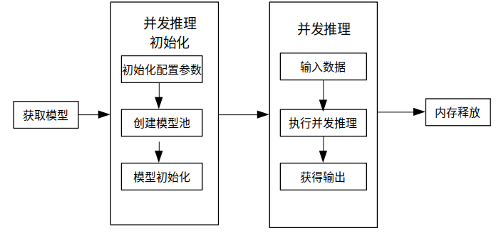

使用Python接口执行并发推理

概述
MindSpore Lite提供多model并发推理接口ModelParallelRunner，多model并发推理现支持Ascend 310/310P/910、Nvidia GPU、CPU后端。
通过MindSpore导出mindir模型，或者由模型转换工具转换获得mindir模型后，即可在Runtime中执行模型的并发推理流程。本教程介绍如何使用Python接口执行多model并发推理。
使用MindSpore Lite并发推理主要包括以下步骤：
准备工作：安装MindSpore Lite云侧推理Python包。
创建配置上下文：设置上下文Context.parallel属性，用于配置多model并发。
并发模型加载与编译：执行并发推理之前，需要调用ModelParallelRunner的build_from_file接口进行并发模型加载和并发模型编译。
设置并发推理任务：创建多线程，绑定并发推理任务。
执行并发推理：使用ModelParallelRunner的Predict接口进行多Model并发推理。
释放内存：无需使用MindSpore Lite并发推理框架时，需要释放自己创建的ModelParallelRunner以及相关的Tensor。

准备工作
以下代码样例来自于使用Python接口执行云侧推理示例代码。
通过MindSpore导出MindIR模型，或者由模型转换工具转换获得MindIR模型，并将其拷贝到
mindspore/lite/examples/cloud_infer/quick_start_parallel_python目录。可以下载MobileNetV2模型文件mobilenetv2.mindir和输入数据input.bin。通过pip安装Python3.7版本的MindSpore Lite云侧推理Python包。
python -m pip install https://ms-release.obs.cn-north-4.myhuaweicloud.com/${MINDSPORE_LITE_VERSION}/MindSpore/lite/release/centos_x86/cloud_fusion/mindspore_lite-${MINDSPORE_LITE_VERSION}-cp37-cp37m-linux_x86.whl --trusted-host ms-release.obs.cn-north-4.myhuaweicloud.com -i https://pypi.tuna.tsinghua.edu.cn/simple
创建配置上下文
多model并发推理相关的上下文Context.parallel属性会保存一些并发推理所需的基本配置参数，用于指导并发model数量以及模型编译和模型执行；
下面示例代码演示了如何设置Context.parallel属性，并配置并发推理的worker数量。
import time
from threading import Thread
import numpy as np
import mindspore_lite as mslite
# the number of threads of one worker.
# WORKERS_NUM * THREAD_NUM should not exceed the number of cores of the machine.
THREAD_NUM = 1
# In parallel inference, the number of workers in one `ModelParallelRunner` in server.
# If you prepare to compare the time difference between parallel inference and serial inference,
# you can set WORKERS_NUM = 1 as serial inference.
WORKERS_NUM = 3
# Simulate 5 clients, and each client sends 2 inference tasks to the server at the same time.
PARALLEL_NUM = 5
TASK_NUM = 2
THREAD_NUM：单个worker的线程数量。WORKERS_NUM * THREAD_NUM应该小于机器核心数量。WORKERS_NUM：在服务器端，指定在一个ModelParallelRunner中的workers的数量，即执行并发推理的单元。若想对比并发推理和非并发推理的推理时长差异，可以将WORKERS_NUM设置为1进行对比。PARALLEL_NUM：并发数量，即同时在发送推理任务请求的客户端数量。TASK_NUM：任务数量，即单个客户端发送的推理任务请求的数量。
# Init RunnerConfig and context, and add CPU device info
context = mslite.Context()
context.target = ["cpu"]
context.cpu.thread_num = THREAD_NUM
context.cpu.inter_op_parallel_num = THREAD_NUM
context.parallel.workers_num = WORKERS_NUM
Context的配置方法详细见Context。
多model并发推理不支持FP32类型数据推理，绑核只支持不绑核或者绑大核，不支持绑中核的参数设置，且不支持配置绑核列表。
并发模型加载与编译
使用MindSpore Lite执行并发推理时，ModelParallelRunner是并发推理的主入口，调用ModelParallelRunner的build_from_file接口进行并发模型加载和并发模型编译。
# Build ModelParallelRunner from file
model_parallel_runner = mslite.ModelParallelRunner()
model_parallel_runner.build_from_file(model_path="./model/mobilenetv2.mindir", context=context)
可以不设置context配置参数，表示设置target为cpu的Context，Context带有默认的parallel属性。
设置并发推理任务
创建多线程，绑定并发推理任务。推理任务包括向输入Tensor中填充数据、使用ModelParallelRunner的predict接口进行并发推理和通过输出Tensor得到推理结果。
def parallel_runner_predict(parallel_runner, parallel_id):
"""
One Runner with 3 workers, set model input, execute inference and get output.
Args:
parallel_runner (mindspore_lite.ModelParallelRunner): Actuator Supporting Parallel inference.
parallel_id (int): Simulate which client's task to process
"""
task_index = 0
while True:
if task_index == TASK_NUM:
break
task_index += 1
# Set model input
inputs = parallel_runner.get_inputs()
in_data = np.fromfile("./model/input.bin", dtype=np.float32)
inputs[0].set_data_from_numpy(in_data)
once_start_time = time.time()
# Execute inference
outputs = parallel_runner.predict(inputs)
once_end_time = time.time()
print("parallel id: ", parallel_id, " | task index: ", task_index, " | run once time: ",
once_end_time - once_start_time, " s")
# Get output
for output in outputs:
tensor_name = output.name.rstrip()
data_size = output.data_size
element_num = output.element_num
print("tensor name is:%s tensor size is:%s tensor elements num is:%s" % (tensor_name,
data_size,
element_num))
data = output.get_data_to_numpy()
data = data.flatten()
print("output data is:", end=" ")
for j in range(5):
print(data[j], end=" ")
print("")
# The server creates 5 threads to store the inference tasks of 5 clients.
threads = []
total_start_time = time.time()
for i in range(PARALLEL_NUM):
threads.append(Thread(target=parallel_runner_predict, args=(model_parallel_runner, i,)))
执行并发推理
启动多线程，执行配置好的并发推理任务。执行过程中，打印并发推理中的单次推理耗时和推理结果，结束线程后打印并发推理总耗时。
# Start threads to perform parallel inference.
for th in threads:
th.start()
for th in threads:
th.join()
total_end_time = time.time()
print("total run time: ", total_end_time - total_start_time, " s")